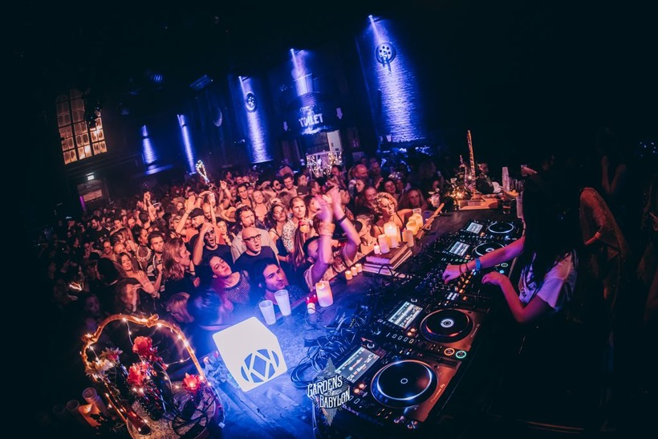
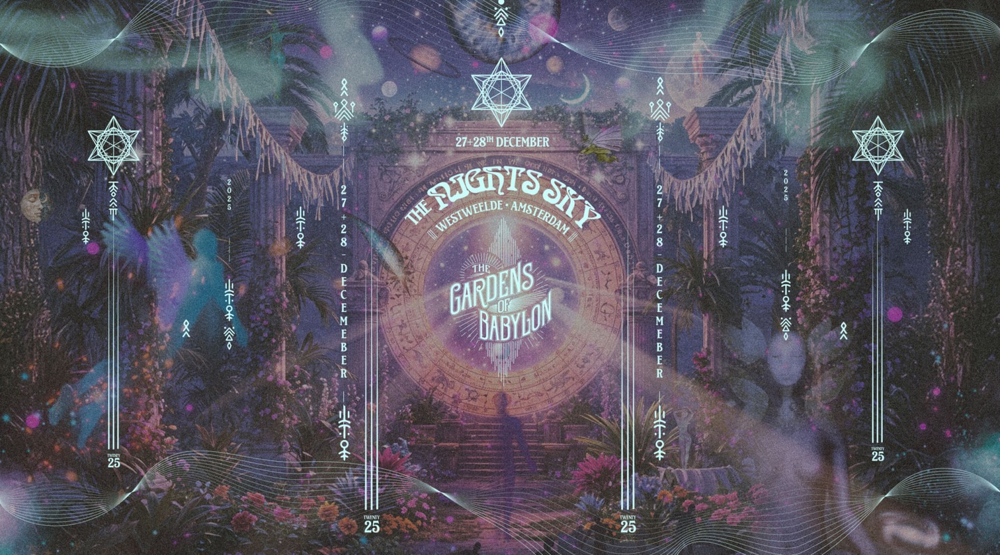
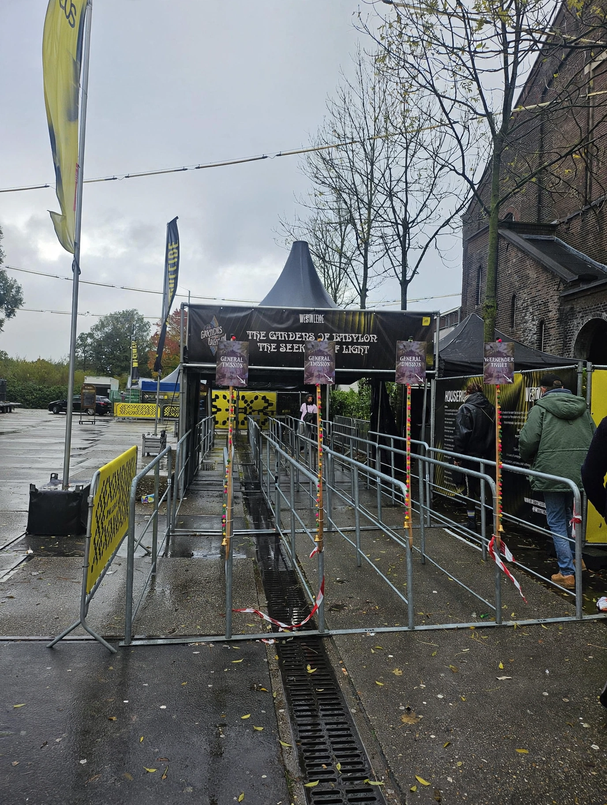

Case study / 2025
The Gardens
of Babylon
Project overview
Led the Entrance Management project from client requirements through planning, crew setup and event-ready operations.
08
Gates
02:00
Operations until
—
Volunteer & paid crew
My role
Making the entrance event-ready.
- Entrance management planning
- Client requirements
- Role allocation
- Crew coordination
- Entrance-manager briefing
- Operational structures
Project context
Night Sky was a weekend festival in Amsterdam. The project focused on preparing a working entrance operation, including ticket scanning, access flow and clear responsibilities across volunteers and paid crew.
Experience
A practical step in translating a client brief into an organised live-operation structure that a team can execute with clarity.
Gallery
Built for
arrival.


